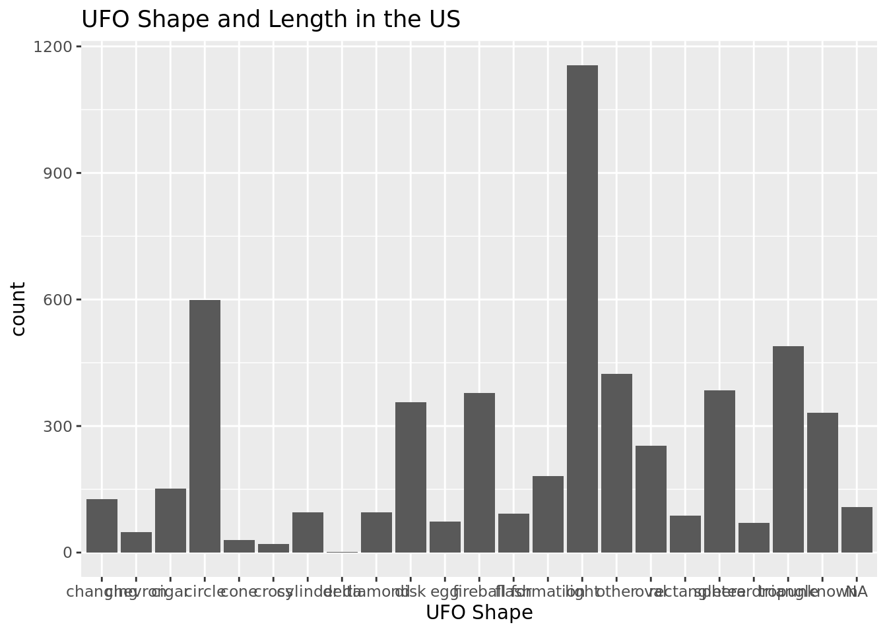

library(tidyverse)
library(tidymodels)Project title
Report
## Introduction and Data
Our topic is UFO sightings.
## Methodology
::: {.cell}
```{.r .cell-code}
ufo_sightings <- readr::read_csv("https://raw.githubusercontent.com/rfordatascience/tidytuesday/master/data/2019/2019-06-25/ufo_sightings.csv")Rows: 80332 Columns: 11
── Column specification ────────────────────────────────────────────────────────
Delimiter: ","
chr (8): date_time, city_area, state, country, ufo_shape, described_encounte...
dbl (3): encounter_length, latitude, longitude
ℹ Use `spec()` to retrieve the full column specification for this data.
ℹ Specify the column types or set `show_col_types = FALSE` to quiet this message.glimpse(ufo_sightings)Rows: 80,332
Columns: 11
$ date_time <chr> "10/10/1949 20:30", "10/10/1949 21:00", "10…
$ city_area <chr> "san marcos", "lackland afb", "chester (uk/…
$ state <chr> "tx", "tx", NA, "tx", "hi", "tn", NA, "ct",…
$ country <chr> "us", NA, "gb", "us", "us", "us", "gb", "us…
$ ufo_shape <chr> "cylinder", "light", "circle", "circle", "l…
$ encounter_length <dbl> 2700, 7200, 20, 20, 900, 300, 180, 1200, 18…
$ described_encounter_length <chr> "45 minutes", "1-2 hrs", "20 seconds", "1/2…
$ description <chr> "This event took place in early fall around…
$ date_documented <chr> "4/27/2004", "12/16/2005", "1/21/2008", "1/…
$ latitude <dbl> 29.88306, 29.38421, 53.20000, 28.97833, 21.…
$ longitude <dbl> -97.941111, -98.581082, -2.916667, -96.6458…ufo_sightings |>
filter(country == "de") |>
drop_na(country) # A tibble: 105 × 11
date_…¹ city_…² state country ufo_s…³ encou…⁴ descr…⁵ descr…⁶ date_…⁷ latit…⁸
<chr> <chr> <chr> <chr> <chr> <dbl> <chr> <chr> <chr> <dbl>
1 10/13/… berlin… <NA> de fireba… 120 1-2 mi… 7 shoo… 10/30/… 52.5
2 10/20/… berlin… <NA> de unknown 1500 25 min… Ovni a… 10/30/… 52.5
3 10/8/2… obernh… <NA> de triang… 2 seconds UFO ap… 11/19/… 49.4
4 1/10/2… otters… <NA> de triang… 240 4 minu… Triang… 1/31/2… 53.1
5 11/15/… bremen… <NA> de unknown 30 30 sec One ob… 8/5/20… 50.7
6 11/15/… sembac… <NA> de egg 120 2 minu… An und… 5/15/2… 49.5
7 11/18/… magdeb… <NA> de other 4 4 sec Ich sa… 11/20/… 52.2
8 1/1/20… neurup… <NA> de fireba… 900 15min A red … 1/10/2… 52.9
9 1/1/20… lamper… <NA> de fireba… 1560 26 min… Severa… 1/10/2… 49.6
10 1/1/20… ramste… <NA> de light 7200 2 hrs Orange… 1/10/2… 49.4
# … with 95 more rows, 1 more variable: longitude <dbl>, and abbreviated
# variable names ¹date_time, ²city_area, ³ufo_shape, ⁴encounter_length,
# ⁵described_encounter_length, ⁶description, ⁷date_documented, ⁸latitudeufo_sightings |>
filter(country != "us") |>
ggplot(
aes(x = ufo_shape, fill = encounter_length)
) +
geom_bar() +
labs(x = "UFO Shape", title = "UFO Shape and Length in the US")Warning: The following aesthetics were dropped during statistical transformation: fill
ℹ This can happen when ggplot fails to infer the correct grouping structure in
the data.
ℹ Did you forget to specify a `group` aesthetic or to convert a numerical
variable into a factor?
theme(axis.text.x = element_text(angle=90, vjust=.4, hjust=1))List of 1
$ axis.text.x:List of 11
..$ family : NULL
..$ face : NULL
..$ colour : NULL
..$ size : NULL
..$ hjust : num 1
..$ vjust : num 0.4
..$ angle : num 90
..$ lineheight : NULL
..$ margin : NULL
..$ debug : NULL
..$ inherit.blank: logi FALSE
..- attr(*, "class")= chr [1:2] "element_text" "element"
- attr(*, "class")= chr [1:2] "theme" "gg"
- attr(*, "complete")= logi FALSE
- attr(*, "validate")= logi TRUE:::